🍓 SROI V2 🍓
Strawberry Robotic Operation Interface
Handheld data-acquisition device / strawberry-harvesting end effector
Zhejiang University
Showcase
Resting on the desk
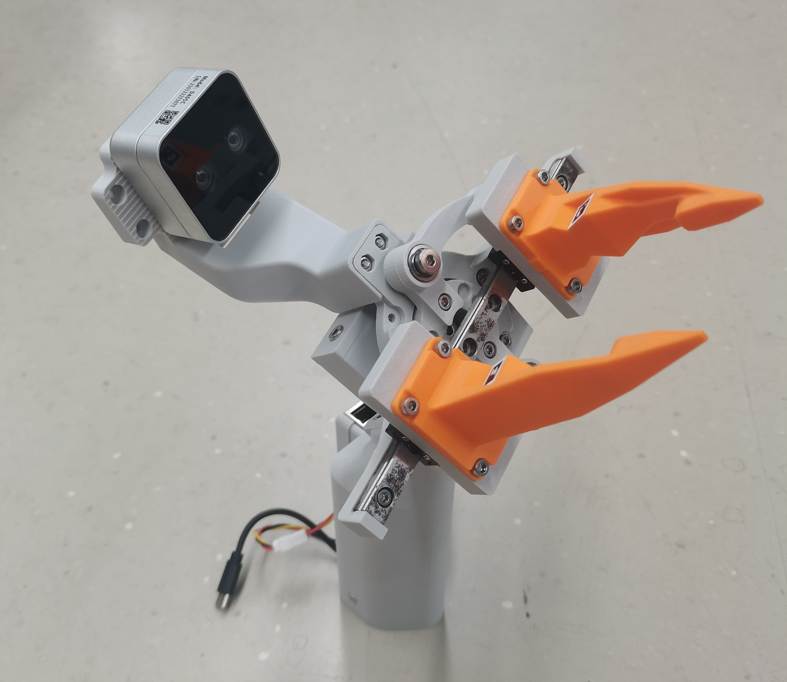 |
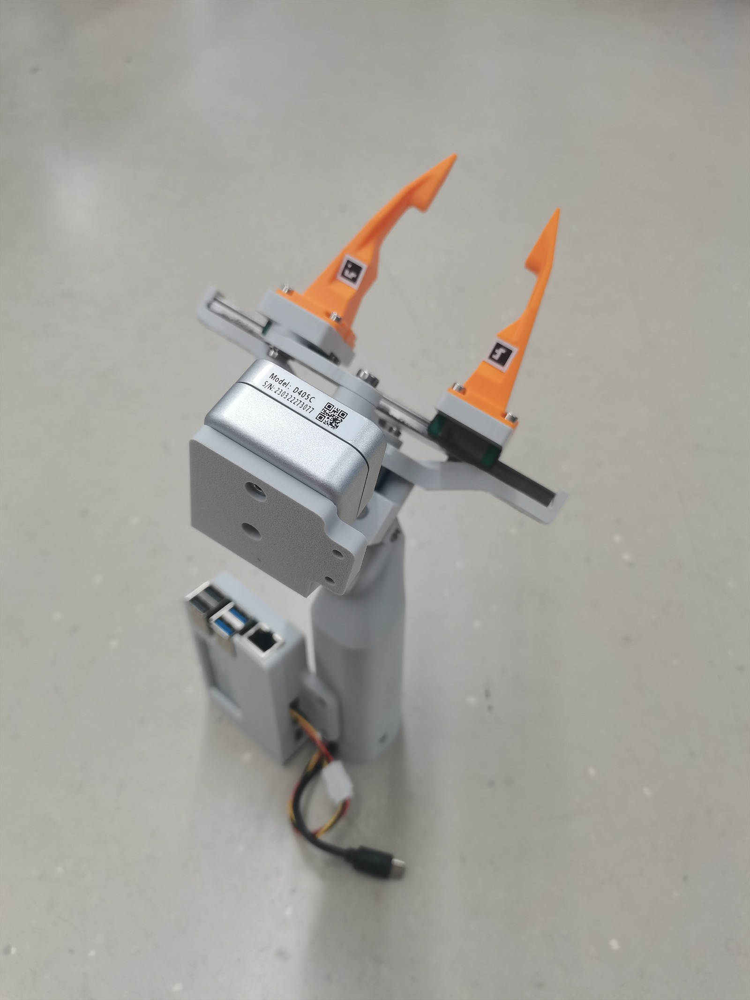 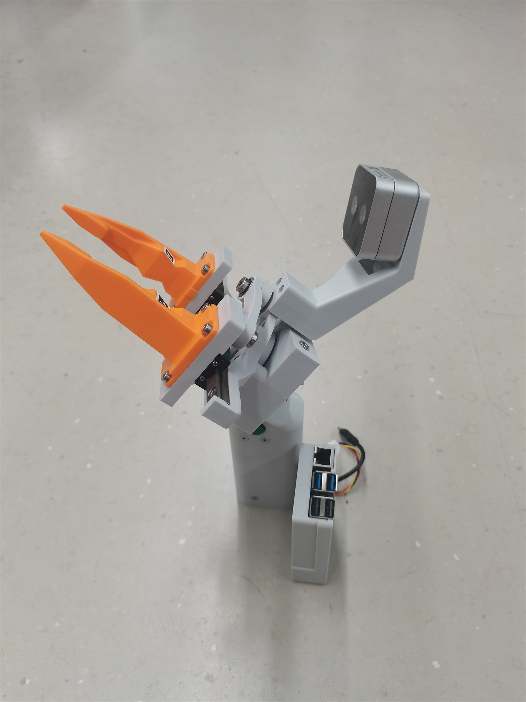 |
Handheld, in use
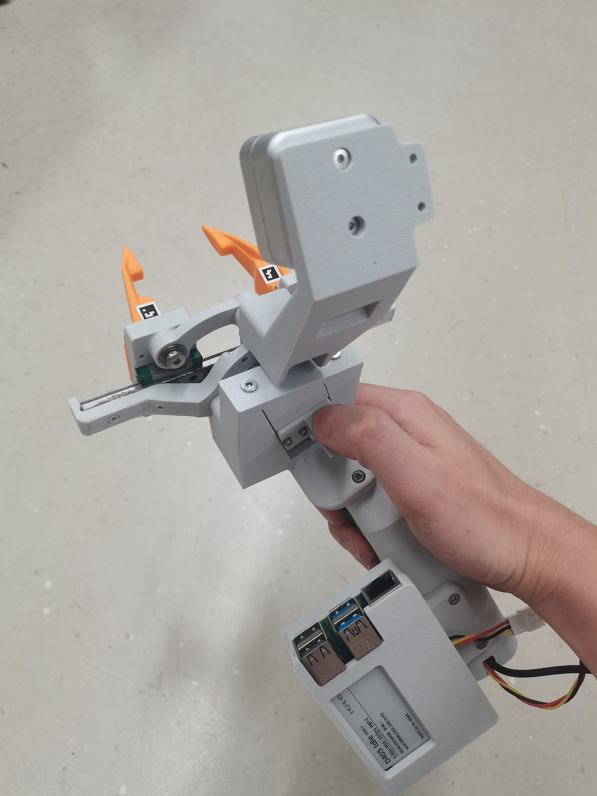 |
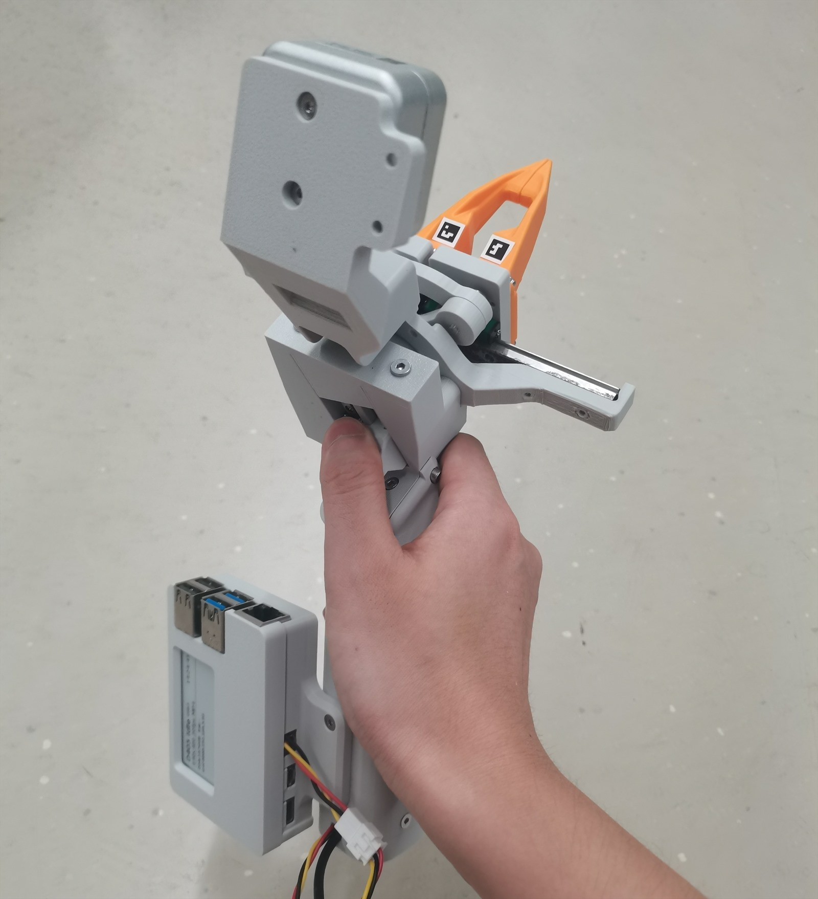 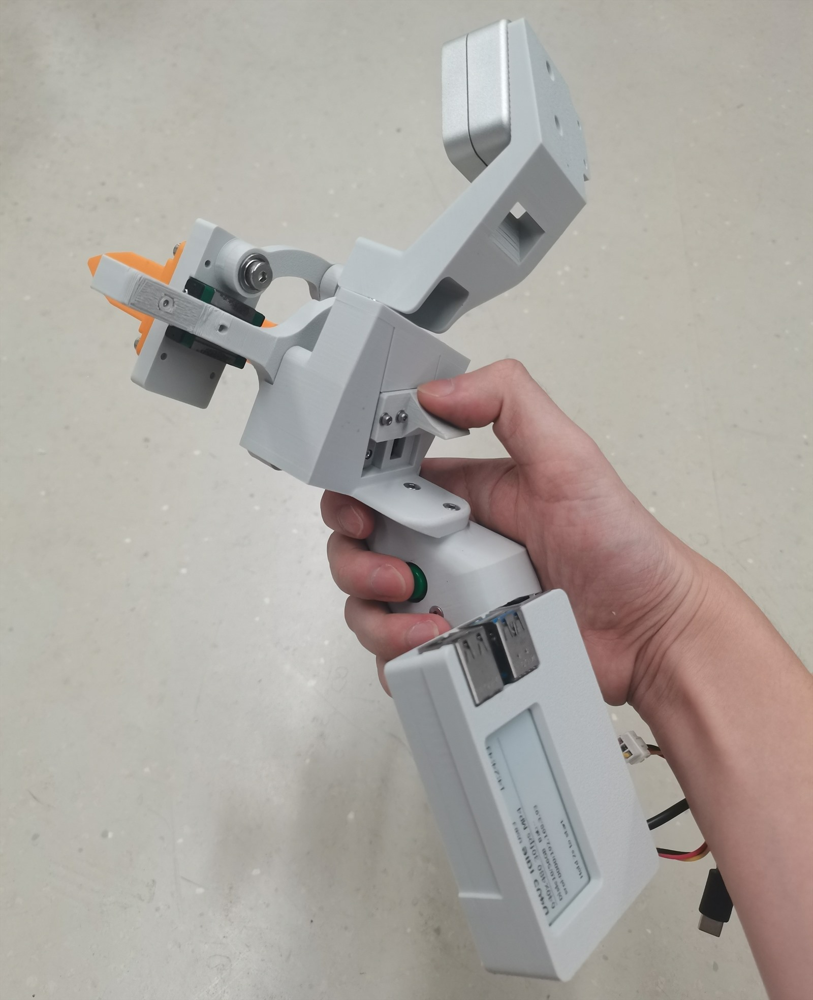 |
Overview
SROI V2 is a UMI-style device for strawberry-harvest data acquisition and execution, spanning the full closed loop of collection → learning → autonomous harvesting:
🧑🌾 Collect
A human harvests strawberries with the handheld device while synchronously recording first-person visual and action data.
🧠 Learn
A model learns the harvesting policy from the collected human demonstrations.
🤖 Execute
A robotic arm carrying the end effector reproduces the same actions to harvest autonomously.
The handheld collection device and the arm-mounted end effector share an identical camera viewpoint — this is the key that lets imitation learning transfer: the frames the model sees during training match the frames the arm sees at deployment.
Three configurations, one core
All three builds share the same parallel-gripper + linear-guide core transmission:
- 🤖 Joint-motor version — mates directly to a joint-motor flange (e.g. Damiao DM-4310J) and mounts on a robotic arm to perform the actual harvesting.
- 🎮 Handheld · slide-button version — gripper open/close controlled by a slide button; power and Raspberry Pi are fully integrated into the body, making it highly portable.
- 🤏 Handheld · finger-coupled version — gripper open/close driven directly by the thumb and index finger, no complex transmission; power and Raspberry Pi kept separate, lighter and convenient to plug straight into a computer.
Design highlights
🔁 One transmission, three builds
A rocker + linkage + linear guide turns a single input into parallel gripper open/close; the same core serves all three builds.
🔩 No heat-set inserts
Machine screws self-tap directly into the 3D-printed parts — fewer assembly steps.
🛤️ MGN9 + MGN5 guides
Silky-smooth motion — the upgrade that resolved all earlier jamming.
⏱️ Swap-config in minutes
Only the rocker hub + drive source change; gripper, linkages, rails and rail base are shared.
📷 Identical viewpoint
Camera viewpoint is identical across collection and deployment — the basis for imitation-learning transfer.
See the full 7-step assembly guide, bill of materials, and design notes in the V2 hardware repository .
Data acquisition — Raspberry Pi system
The handheld device pairs with a portable recorder built around a Raspberry Pi 5. A monochrome e-ink status display shows the recording state at a glance, a single trigger button drives recording, and an integrated battery keeps the unit untethered in the field. The Pi runs Raspberry Pi OS with ROS and stereo-camera drivers inside an Ubuntu 20.04 Docker environment, timestamping synchronized stereo images and IMU measurements. A short button press marks the start/end of a demonstration; a long press starts/stops recording.
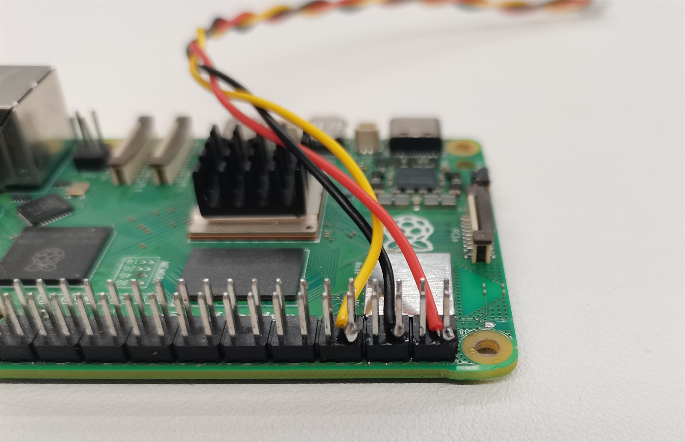 |
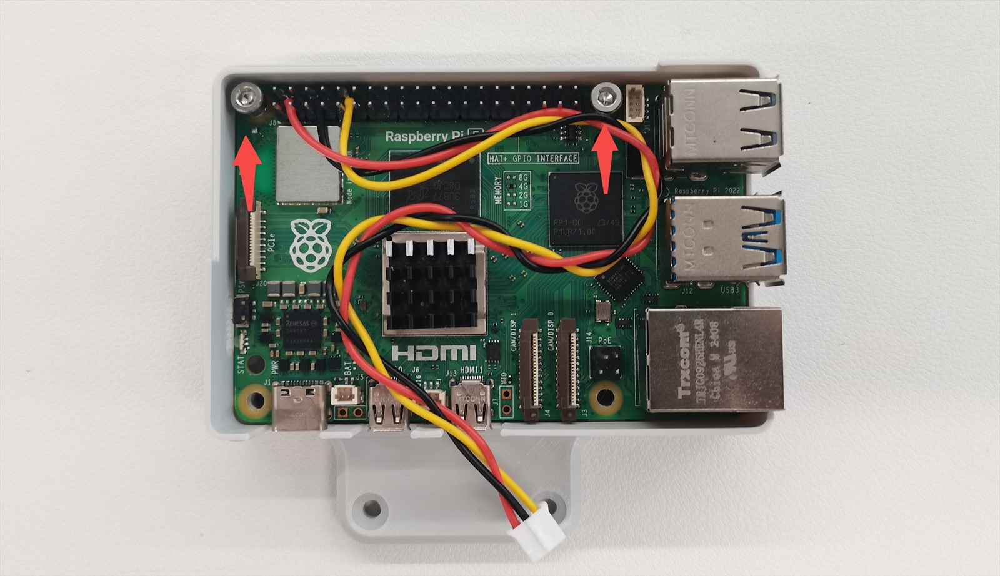 |
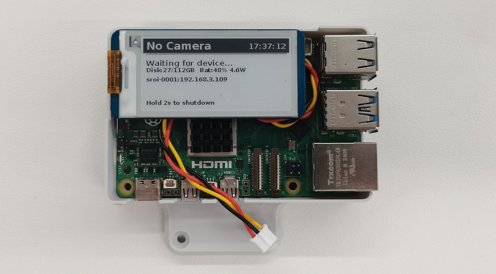 |
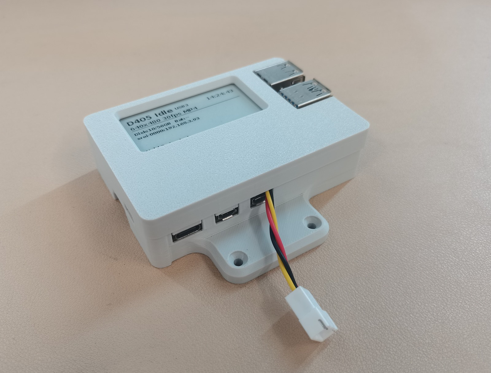 |
Acquisition system (sroi_rasp_system)
Data processing
Raw recordings are segmented into individual operations. Stereo image pairs are processed with ORB-SLAM3 to estimate the camera trajectory, while AprilTags on the finger slider are tracked to recover the gripper opening. The resulting poses and gripper state are converted into training data for imitation-learning systems. This processing pipeline is shared by SROI V1 and V2, and also provides recording, quality-control, visualization, and LeRobot conversion tools.
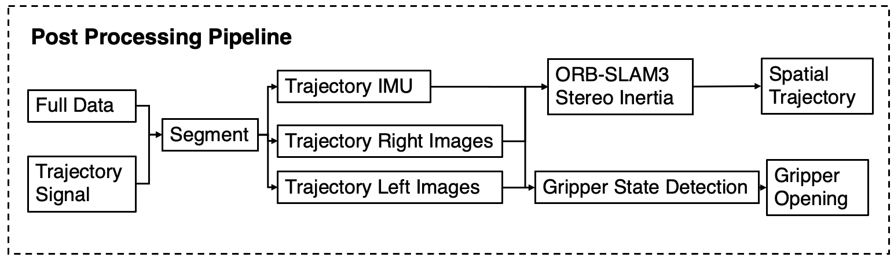
Processing tools (sroi_dataprocess)
SROI versions
| Component | V1 | V2 / current work |
|---|---|---|
| Hardware | STEP models & docs (SROI) | sroi_v2_hardware |
| Acquisition system | Architecture described in the V1 paper | sroi_rasp_system |
| Processing | Legacy ROS-bag workflow | sroi_dataprocess (shared by V1 & V2) |
| Dataset | V1 dataset webpage | In development |
V2 is a continuing redesign rather than a drop-in set of V1 replacement parts — use the documentation in each V2 repository when building the newer system.
Links
Contact
Fei Zhenghao, zfei@zju.edu.cn